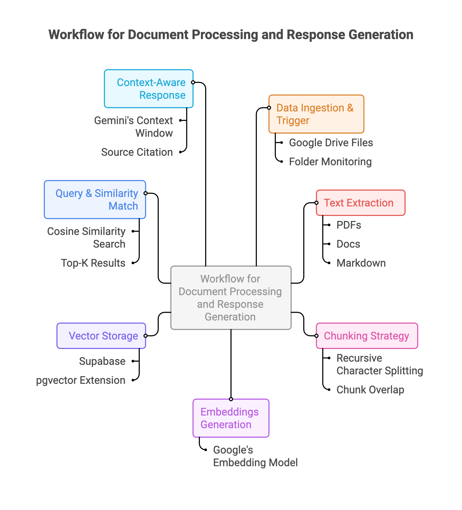

Built a complete RAG pipeline using n8n (low-code automation platform) that ingests documents from Google Drive, processes them into semantic vectors, stores them in a vector database, and enables natural language querying with AI-generated responses grounded in my personal knowledge base.
What is RAG?
Retrieval Augmented Generation (RAG) combines large language models with a retrieval system that fetches relevant external data in real-time, feeding it into the model to generate accurate, context-aware responses. Instead of relying solely on the LLM's training data, RAG grounds responses in your specific documents.
RAG Pipeline Architecture

1. Data Ingestion & Trigger: Google Drive files trigger the workflow automatically when added or updated. The system monitors specified folders and kicks off processing for new documents.
2. Text Extraction: n8n nodes extract text from various file formats (PDFs, docs, markdown, text files). Metadata like filename, creation date, and source are preserved for context.
3. Chunking Strategy: Recursive character splitting breaks large documents into manageable chunks. Each chunk maintains semantic coherence while staying within token limits for embeddings. Chunk overlap ensures context isn't lost at boundaries.
4. Embeddings Generation: Google's embedding model converts text chunks into high-dimensional semantic vectors (768 dimensions). These vectors capture meaning, allowing similarity search based on concepts rather than keywords.
5. Vector Storage: Embeddings are stored in Supabase with pgvector extension, enabling fast similarity search. Each vector is linked to its source chunk and metadata for retrieval.
6. Query & Similarity Match: User query is vectorized using the same embedding model. Supabase performs cosine similarity search to find the most relevant chunks from the knowledge base. Top-K results are retrieved based on similarity scores.
7. Context-Aware Response: Retrieved chunks are injected into Gemini's context window as grounding information. The LLM generates a response that synthesizes the retrieved knowledge, citing sources and providing relevant context from the original documents.
Why n8n?: Speed to prototype mattered more than perfect architecture. As a PM, I needed to test ideas and understand concepts quickly without deep coding. n8n's visual workflow editor let me focus on understanding RAG mechanics rather than debugging infrastructure. The lesson: in early product stages, choose tools that maximize learning velocity, not engineering purity.